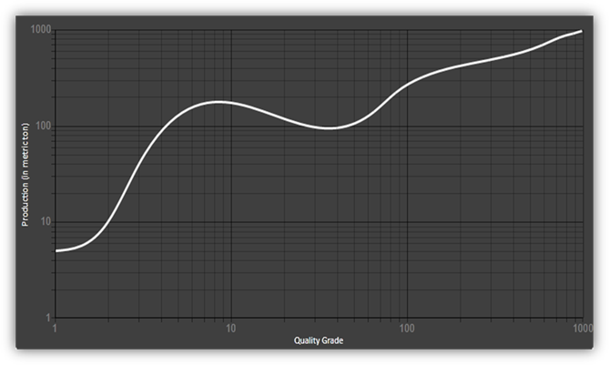

If customers have a function on a very large scale but it has a very small slope, they can make use of this logarithmic scale (power of 10). A logarithmic scale is used in in the Richter scale, which is used for measuring how strong or powerful an earthquake is and showing it as a graph.

Figure 107: Homogenous Mesh Grid in a Logarithmic Chart